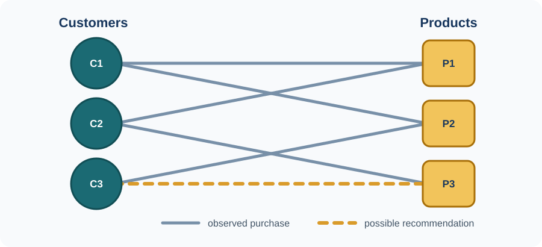

Category 2 GNN applications for real-world data
A graph is a way to represent entities and the relationships between them. The entities are called nodes and their relationships are called edges. Both may carry useful information: a customer node might contain age or location, a product node might contain category and price, and an edge might record that a customer bought or rated a product. Road sensors connected by roads, transactions linked by payments and atoms connected by chemical bonds are other examples.

A graph neural network (GNN) learns numerical representations, or embeddings, by combining a node’s own features with information from its neighbours. In the example, the model can use a customer’s previous purchases, the properties of products and patterns from nearby customers to score a new customer-product link. The same principle supports node classification (classify a transaction), link prediction (recommend a product), and graph-level prediction (predict a property of an entire molecule or sensor system).
Each project below asks a specific question about when and why the graph helps — not simply whether a GNN can be trained. Students define what the nodes and edges mean, fix a split and a primary metric, and always include a control that tests whether the graph contributes at all.
Application project requirements
Specify a defensible graph construction, a fixed split and primary metric, a non-graph baseline and at least one GNN. Include an edge-removal, edge-randomisation or alternative-graph experiment to test whether the graph contributes.
Learn first and find ideas
- Begin with A Gentle Introduction to Graph Neural Networks, then use the Stanford CS224W course and project guidance and the CS224W project archive.
- PyTorch Geometric dataset catalogue, Open Graph Benchmark, SNAP datasets and the Temporal Graph Benchmark.
- Stanford examples: traffic as a dynamic graph, water quality with RGCNs, fake-news detection and NFT transaction prediction.
Projects in this category
Use the contents panel or the project links in the left navigation to move directly to a project.
2.1 Remaining useful life prediction for aircraft engines
What you will do. Predict how many operating cycles remain before a turbofan engine fails. Each sensor channel becomes a node and edges express relationships among sensors. The project’s real subject is the graph itself: does it matter how you connect the sensors?
Data. Start with FD001; FD002–FD004 are optional transfer sets. Reserve complete training engines for validation and use the official test set for final scores. Split by engine, never by window. NASA provides final RUL labels for test engines, so early/middle/late-life analysis belongs on the held-out validation engines. The download is public; NASA does not specify a licence on the catalogue page.
Methods and code. Use a GRU or TCN as the graph-free baseline and a compact GCN–GRU or GAT–GRU as the graph model. The GNN RUL benchmark is a useful reference; a small PyTorch Geometric implementation is sufficient.
Baselines and evaluation. Compare a constant/degradation-stage baseline, one sequence model and one compact GNN. Use MAE or RMSE as primary, and report three seeds for MSc work.
Bachelor research question. How sensitive is GNN-based remaining-useful-life prediction to the way the sensor graph is constructed?
Core experiment. Keep the model fixed and compare correlation, sensor-similarity, random and no-edge graphs, plus the graph-free sequence baseline.
Interpretation. FD001 has only 21 sensor channels, so the graph may add little beyond temporal modelling. A correlation graph performing no better than a random graph is a valid result.
Master research question. Can a sparse, time-varying sensor graph improve accuracy when sensors are noisy or missing? Develop one graph-learning mechanism, compare it with fixed and random graphs at matched capacity, and add one robustness or cross-subset transfer study.
Practical notes. Fix the RUL cap, normalisation and metric before modelling; changing them makes published results incomparable.
2.2 Multi-horizon traffic forecasting with data-driven graph structure
What you will do. Forecast traffic speed at every road sensor 15, 30 and 60 minutes ahead, and determine when the road network’s structure actually helps. Short-horizon forecasts may depend mostly on a sensor’s own recent history, while longer horizons may require information propagating through the network.
Data. Use METR-LA with the standard chronological 70/10/20 split. Fit scalers and learned/correlation graphs on training data only. The files are publicly downloadable through DCRNN, but no separate dataset licence is stated there; do not redistribute them.
Methods and code. Compare historical average and a graph-free GRU with Graph WaveNet or a compact STGCN. DCRNN is optional because its reference implementation is slower and uses an old TensorFlow stack.
Baselines and evaluation. Use historical average, graph-free GRU, and the same GNN with distance, randomised and identity/no-message-passing graphs. Report masked MAE (primary), RMSE and MAPE at 15, 30 and 60 minutes.
Bachelor research question. Does graph information become more valuable as the forecasting horizon increases?
Core experiment. With one trained 12-step model, compare the distance, randomised and identity/no-message-passing graphs at steps 3, 6 and 12 (15, 30 and 60 minutes). Include the graph-free GRU as a separate baseline.
Note. Evaluate one 12-step model at different horizons; do not train three separate models.
Master research question. Does a sparse, traffic-regime-conditioned adjacency improve 60-minute forecasts over road and learned static graphs? Match model capacity, use three seeds, and analyse whether edges change plausibly between rush hour and free flow.
Practical notes. Profile early and use top-k or low-rank adjacency; a dense graph at every time step is unnecessarily expensive.
2.3 Illicit Bitcoin transaction detection
What you will do. Classify labelled Bitcoin transactions as licit or illicit, then test how missing payment edges affect the result.
Data. The PyG loader downloads the data and defines time steps 1–34 as training and 35–49 as test; take validation steps only from 1–34. Unknown labels are unlabelled, not negatives. The dataset is CC BY-NC-ND 4.0: academic analysis is allowed, but commercial use and redistribution of modified data are restricted.
Methods and code. Compare logistic regression or random forest with GCN and GraphSAGE in PyTorch Geometric. Use class weighting only after the unweighted baseline is established.
Baselines and evaluation. Use the first 93 PyG features for the truly local, graph-free baseline. Report a second 165-feature baseline separately because the last 72 features already aggregate neighbours. Compare both with GCN/GraphSAGE and a no-edge control. Use AUPRC or illicit-class F1 as primary and report performance by time step.
Bachelor research question. How robust are GNN-based illicit-transaction detectors when graph information is incomplete?
Core experiment. Delete 0%, 10%, 25% and 50% of test edges and compare both GNNs with the 93-feature local baseline. Repeat deletion with several random seeds.
Interpretation. A 165-feature random forest is a strong baseline partly because 72 features already summarise neighbours. Keep it, but do not call it graph-free.
Master research question. Can a temporally calibrated GNN remain useful under concept drift and missing edges? Add one temporal or uncertainty mechanism and evaluate it by time step and at a fixed alert budget.
Practical notes. The 49 time steps are disconnected snapshots. Preserve time order and keep label handling and threshold selection identical across methods.
2.4 Graph-based movie recommendation with accuracy and coverage
What you will do. Rank unseen films for each user and test whether better ranking accuracy reduces catalogue coverage or long-tail exposure.
Data. Treat ratings of 4–5 as positive interactions. Split each user’s positives chronologically and remove validation/test edges from the training graph. Evaluate over the full unseen catalogue. The download is public for research, but its licence forbids redistribution and commercial use without permission.
Methods and code. Compare popularity, BPR matrix factorisation and LightGCN. A direct PyTorch Geometric implementation is simpler than adapting the official LightGCN repository.
Baselines and evaluation. Use identical training negatives for BPR-MF and LightGCN. Report NDCG@20 or Recall@20, catalogue coverage and average recommended-item popularity.
Bachelor research question. Does graph-based recommendation improve ranking accuracy at the expense of catalogue coverage and long-tail exposure?
Core experiment. Compare the three methods, then vary LightGCN depth or its training negative sampler and plot the accuracy/coverage trade-off. Use at least three seeds and analyse results by user activity and item popularity.
Practical notes. Avoid future-interaction leakage and sampled-negative evaluation. Submit a reproducible pipeline, controlled comparison and error analysis.
2.5 Molecular HIV activity prediction with calibrated GNNs
What you will do. Predict HIV-assay activity and test whether a GNN generalises to unseen molecular scaffolds better than chemical fingerprints.
Data. The OGB loader automatically downloads the MIT-licensed data and supplies the scaffold split and evaluator. Do not compare scaffold-split results with random-split figures.
Methods and code. Compare Morgan fingerprints with logistic regression or random forest via RDKit against GCN and edge-aware GINE models. OGB and PyTorch Geometric provide loaders and baseline components.
Baselines and evaluation. Use a fingerprint classifier, GCN and GINE, with one bond-feature ablation. Report ROC-AUC (official primary metric), AUPRC and three seeds.
Bachelor research question. Do GNNs generalise better than traditional molecular fingerprints to scaffolds not seen during training?
Core experiment. Compare fingerprints, GCN and GINE on the official split, then inspect errors on scaffolds most dissimilar to training data.
Interpretation. A fingerprint/tree model may match or beat a plain GNN. Select all hyperparameters on validation data; never tune against the test split.
Master research question. Can calibration improve on held-out scaffolds without reducing ROC-AUC? Compare temperature scaling with one ensemble or uncertainty method and report calibration by scaffold novelty.
Practical notes. Keep the official split and evaluator fixed; choose thresholds and calibration parameters on validation data only.